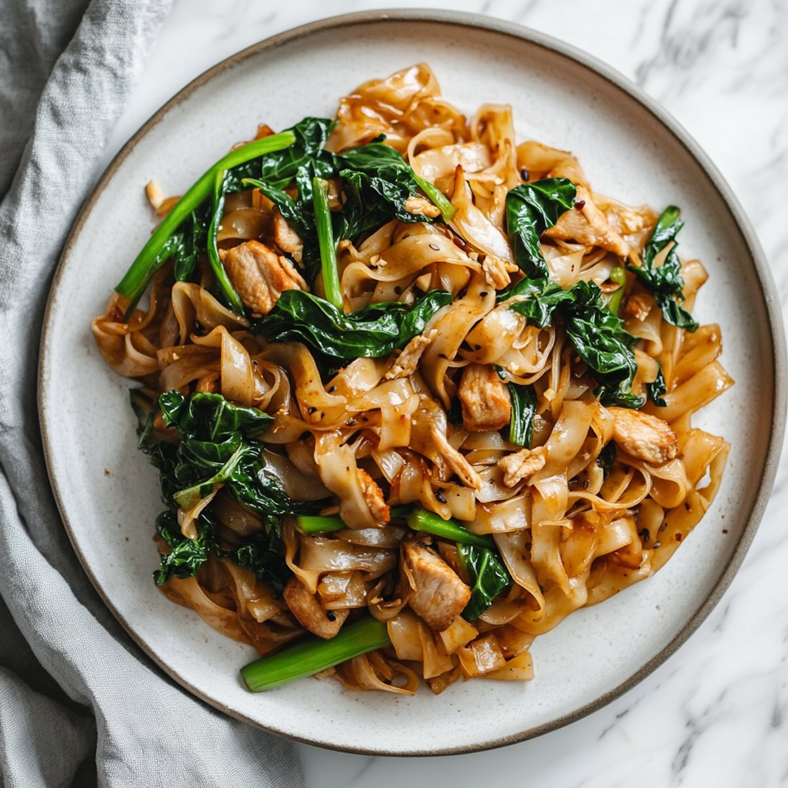
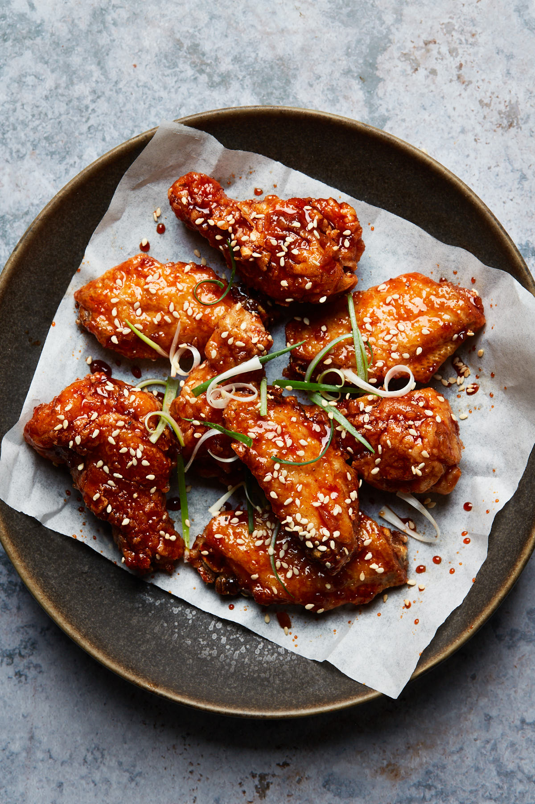

This dish is called Pad See Eiw. It’s been one of my favorite foods since I was a little girl. Pad See Eiw originated in Thailand and was influenced by chinese immigrants. It’s mixed with Chinese style stir-frying and Thai flavors and ingredients, it is also made with wide rice noodles and soy sauce.
This dish is called Korean fried chicken and it’s often paired with pickled radish. I love mostly all types of fried chicken but this one specifically is my favorite because of the texture and sweetness of the chicken. This is a popular dish that originated in the 1950s during the Korean War. They were inspired by southern-style fried chicken and adapted by adding their own twists to it. So, they double fry the chicken with cornstarch or potato starch and keep it crispy by hand-brushing the sauce.